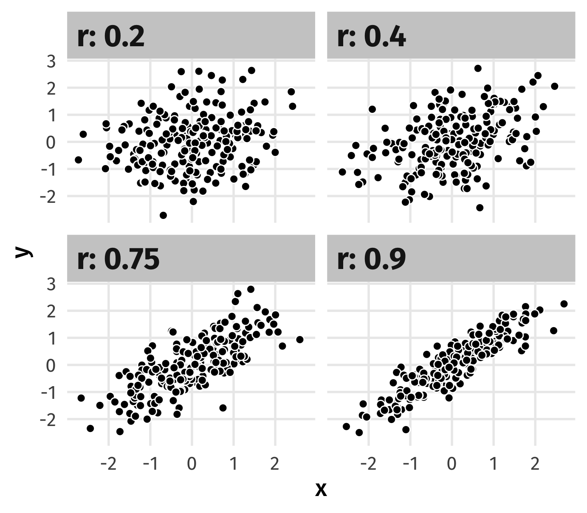
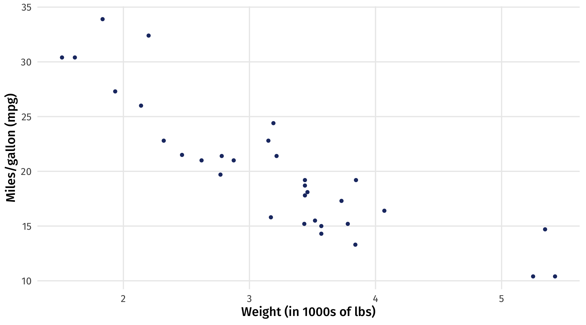
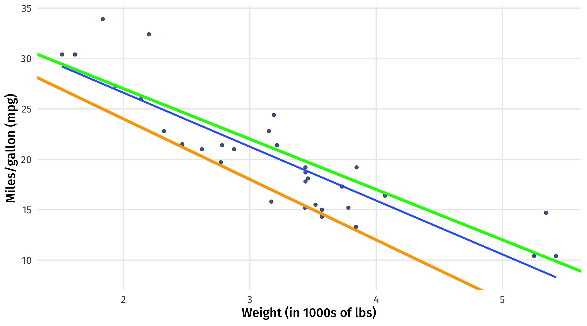
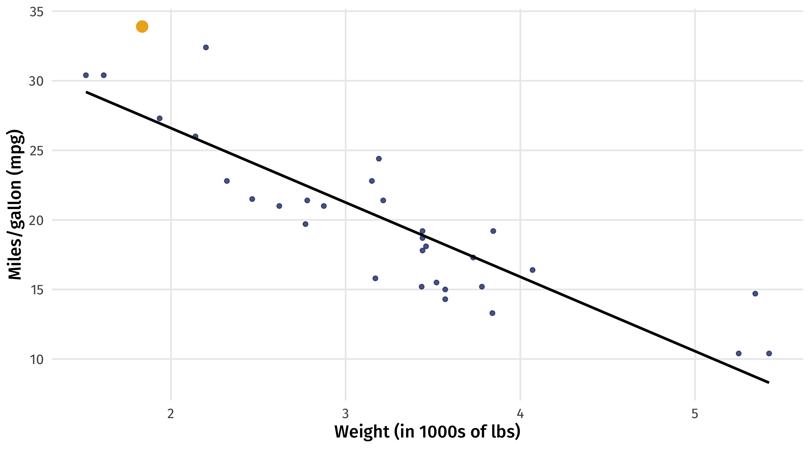

Modeling I
POL51
October 21, 2024
Plan for today
Correlations
Models and lines
Fitting models
Patterns in the data
- So far: wrangling and visualizing data
- Looking for patterns (hopefully real)
- Examples?
Patterns and correlations

A useful way to talk about these patterns is in terms of correlations
When we see a pattern between two (or more) variables, we say they are correlated; when we don’t see one, we say they are uncorrelated
Correlations can be strong or weak, positive or negative
Correlations: strength
When two variables “move together”, the correlation is strong
When they don’t “move together”, the correlation is weak

Correlations: strength
Better heuristic: knowing about one variable tells you something about the other
Strong: if you know how a county voted in 2012, you have a good guess for 2016
Weak: if you know a county’s average commute time, you know almost nothing about how it votes
Correlation: strength
We also talk (informally) about correlations that include categorical variables
Big gaps between groups \(\rightarrow\) correlated
Correlation: direction
➕: When two variables move “in the same direction”
➖: When two variables move “in opposite directions”
Quantifying correlation
When the two variables are continuous, we can quantify the correlation
\[r = \frac{ \sum_{i=1}^{n}(x_i-\bar{x})(y_i-\bar{y}) }{\sqrt{\sum_{i=1}^{n}(x_i-\bar{x})^2\sum_{i=1}^{n}(y_i-\bar{y})^2}}\]
Correlation coefficient, r:
ranges from -1 to 1,
perfectly correlated = 1 or -1,
perfectly uncorrelated = 0
All of the movement is here: \(\sum_{i=1}^{n}(x_i-\bar{x})(y_i-\bar{y})\)
Quantifying correlation
| age | \(\overline{age}\) | \(\ age_{i} - \overline{age}\) | child | \(\overline{child}\) | \(\ child_{i} - \overline{child}\) | product |
|---|---|---|---|---|---|---|
| 80 | 49.16 | 30.84 | 5 | 1.85 | 3.15 | 97.10 |
| 57 | 49.16 | 7.84 | 2 | 1.85 | 0.15 | 1.16 |
| 26 | 49.16 | -23.16 | 1 | 1.85 | -0.85 | 19.73 |
\[\sum_{i=1}^{n}(age_i-\overline{age})(child_i-\overline{child})\]
Lots of big, positive products \(\rightarrow\) strong positive correlation
Lots of big, negative products \(\rightarrow\) strong negative correlation
A mix of positive and negative products \(\rightarrow\) weak correlation
Interpreting the coefficient
| Correlation coefficient | Rough meaning |
|---|---|
| +/- 0.1 - 0.3 | Modest |
| +/- 0.3 - 0.5 | Moderate |
| +/- 0.5 - 0.8 | Strong |
| +/- 0.8 - 0.9 | Very strong |

Guess the correlation
Correlation coefficient: just a number
It’s useful in a narrow range of situations
The underlying concepts are more broadly applicable
| Strength | Direction | Meaning |
|---|---|---|
| Strong | Positive | As X goes up, Y goes up *a lot* |
| Strong | Negative | As X goes up, Y goes down *a lot* |
| Weak | Positve | As X goes up, Y goes up *a little* |
| Weak | Negative | As X goes up, Y goes down *a little* |
üö® Our turn: correlations üö®
What do these pair-wise correlations from elections tell us?
Models
Models
Models are everywhere in social science (and industry)
Beneath what ads you see, movie recs, election forecasts, social science research \(\rightarrow\) a model
In the social sciences, we use models to describe how an outcome changes in response to a treatment

The moving parts
The things we want to study in the social sciences are complex
Why do people vote? We can think of lots of factors that go into this decision
Voted = Age + Interest in politics + Free time + Social networks + . . .
Models break up (decompose) the variance in an outcome into a set of explanatory variables
Speaking the language
| Y | X |
|---|---|
| Outcome variable | Treatment variable |
| Response variable | Explanatory variable |
| Dependent variable | Independent variable |
| What is being changed | What is causing the change in Y |
Maybe you’ve seen some of these terms before; here’s what we will use
üö®Your turnüö® Identify the parts
Identify the treatment and the outcome in each example below:
A car company wants to know how changing the weight of a car will impact its fuel efficiency
A pollster wants to predict vote choice in a county based on race, income, past voting
Does having a friend vote make you more likely to vote?
Model cars
Say we want to model how changing a car’s weight (treatment) affects its fuel efficiency (outcome)
| mpg | cyl | disp | hp | drat | wt | qsec | vs | am | gear | carb | |
|---|---|---|---|---|---|---|---|---|---|---|---|
| Mazda RX4 | 21.0 | 6 | 160 | 110 | 3.90 | 2.62 | 16.46 | 0 | 1 | 4 | 4 |
| Mazda RX4 Wag | 21.0 | 6 | 160 | 110 | 3.90 | 2.88 | 17.02 | 0 | 1 | 4 | 4 |
| Datsun 710 | 22.8 | 4 | 108 | 93 | 3.85 | 2.32 | 18.61 | 1 | 1 | 4 | 1 |
| Hornet 4 Drive | 21.4 | 6 | 258 | 110 | 3.08 | 3.21 | 19.44 | 1 | 0 | 3 | 1 |
| Hornet Sportabout | 18.7 | 8 | 360 | 175 | 3.15 | 3.44 | 17.02 | 0 | 0 | 3 | 2 |
Modeling weight and fuel efficiency
Very strong, negative correlation (r = -.9)
Why a model?
Graph + correlation just gives us direction and strength of relationship
What if we wanted to know what fuel efficiency to expect if a car weighs 3 tons, or 6.2?
Lines as models
There’s many ways to model relationships between variables
A simple model is a line that “fits” the data “well”
The line of best fit describes how fuel efficiency changes as weight changes
Strength of relationship
The slope of the line quantifies the strength of the relationship
Slope: -5.3 \(\rightarrow\) for every ton of weight you add to a car, you lose 5 miles per gallon

Guessing where there’s no data
Line also gives us “best guess” for the fuel efficiency of a car with a given weight
even where we have no data
best guess for 4.5 ton car \(\rightarrow\) 13 mpg
Drawing lines in R
We can add a trend-line to a graph using geom_smooth(method = "lm")
Where does this line come from?
6th grade algebra notation:
\(Y = b + mx\)
Y = a number
x = a number
m = the slope \(\frac{rise}{run}\)
b = the intercept
Statistical notation:
\(Y = \beta_0 + \beta_{1} x\)
\(Y\) = a number
\(x1\) = a number
\(\beta_1\) = the slope \(\frac{rise}{run}\)
\(\beta_0\) = the intercept
If you know \(\beta_0\) (intercept) and \(\beta_1\) (slope) you can draw a line
END OF MIDTERM CONTENT
Some lines
Which line to draw?
We could draw many lines through this data; which is “best”?

Drawing the line
We need to find the intercept (\(\beta_0\)) and slope (\(\beta_1\)) that will “fit” the data “well”
\(mpg_{i} = \beta_0 + \beta_1 \times weight_{i}\)
What does it mean to “fit well”?
- Models use a rule for defining what it means to fit the data “well”
- This rule is called a loss function
- Different models use different loss functions
- We’ll look at the most popular modeling approach:
- ordinary least squares (OLS)
The loss function for OLS
The loss function for OLS (roughly!) says:
a line fits the data well if the sum of all the squared distances between the line and each data point is as small as possible
\(Y_i\) is the data point \(\rightarrow\) value of observation \(i\) \(\rightarrow\) the mpg of car \(i\)
\(\widehat{Y_i}\) is the line \(\rightarrow\) the mpg our line predicts for a car with that weight \(\rightarrow\)
\(\beta_0 + \beta_1 \times weight\)
Distance between each point and line = \((Y_i - \widehat{Y_i})\)
Distance between each point and the line
\(Y_i\) = actual MPG for the Toyota Corolla
Distance between each point and the line
\(\widehat{Y_i}\) = our model’s predicted MPG (\(\beta_0\) + \(\beta_1 \times weight\)) for the Corolla
Distance between each point and the line
\(Y_i - \widehat{Y_i}\) = the distance between the data point and the line
Back to the loss function
\(Y_i - \widehat{Y_i}\) is the distance between the point and the line
OLS uses the squared distances: \((Y_i - \widehat{Y_i})^2\)
The sum of the squared distances: \(\sum_i^n{(Y_i - \widehat{Y_i})^2}\)
Remember that \(\widehat{Y_i} = \widehat{\beta_0} + \widehat{\beta_{1}} \times weight\)
So can rewrite: \(\sum_i^n{(Y_i - \widehat{Y_i})^2} = \sum_i^n{(Y_i - \widehat{\beta_0} + \widehat{\beta_{1}} \times weight)^2}\)
So we need to pick \(\beta_0\) and \(\beta_1\) to make this as small as possible (minimize):
\(\sum_i^n{(Y_i - \widehat{\beta_0} + \widehat{\beta_{1}} \times weight)^2}\)
Estimating the parameters
How do we find the specific \(\beta_0\) and \(\beta_1\) that minimize the loss function?
Zooming out (not just OLS): in modeling there are two kinds of approaches
Statistical theory: make some assumptions and use math to find \(\beta_0\) and \(\beta_1\)
Computational: make some assumptions and use brute force smart guessing to find \(\beta_0\) and \(\beta_1\)
Sometimes (1) and (2) will produce the same answer; other times only (1) or (2) is possible
Computational approach
Imagine an algorithm that:
Draws a line through the data by picking values of \(\beta_0\) and \(\beta_1\)
Sees how far each point is from the line
Sum up all the squared distances for that line (remember OLS calls for squaring!)
Rinse, repeat with a new line
The pair of \(\beta_0\) and \(\beta_1\) that produce the line with the smallest sum of squared distances is our OLS estimator
Strawman comparison
Which line fits the data better? (Duh)
First candidate: fit the line
Rough guess: what is \(\beta_0\) and \(\beta_1\) here?

First candidate: the residuals
How far is each point from the line? This is \((Y_i - \widehat{Y_i})\)
Also known as the residual \(\approx\) how wrong the line is about each point
How good is line 1?
Remember, our loss function says that a good line has small \((Y_i - \widehat{Y_i})^2\)
| mpg | \(\ \widehat{mpg}\) | residual | squared_residual | |
|---|---|---|---|---|
| Mazda RX4 | 21.0 | 23.28 | -2.28 | 5.21 |
| Mazda RX4 Wag | 21.0 | 21.92 | -0.92 | 0.85 |
| Datsun 710 | 22.8 | 24.89 | -2.09 | 4.35 |
| Hornet 4 Drive | 21.4 | 20.10 | 1.30 | 1.68 |
| Hornet Sportabout | 18.7 | 18.90 | -0.20 | 0.04 |
We sum up the squared residuals to measure how good (or bad) the line is overall = \(\sum_i^n{(Y_i - \widehat{Y_i})^2} \approx 278.3\)
Second candidate: fit the line
Rough guess: what is \(\beta_0\) and \(\beta_1\) here?
Second candidate: the residuals
How good is line 2?
| mpg | \(\ \widehat{mpg}\) | residual | squared_residual | |
|---|---|---|---|---|
| Ferrari Dino | 19.7 | 22.48 | -0.39 | 0.15 |
| Merc 450SL | 17.3 | 17.35 | -2.79 | 7.78 |
| Chrysler Imperial | 14.7 | 8.72 | -5.39 | 29.05 |
| Porsche 914-2 | 26.0 | 25.85 | 5.91 | 34.93 |
| Cadillac Fleetwood | 10.4 | 9.23 | -9.69 | 93.90 |
\(\sum_i^n{(Y_i - \widehat{Y_i})^2} \approx 1,126\)
So line 2 is a much worse fit for the data than line 1
The best line
This is what geom_smooth() is doing under-the-hood (sorry)
It’s using math to figure out which line fits the data best
Conceptual best = the line that is closest to all the points
Math best = the smallest sum of squared residuals
So who are the winning Betas?
\(Y = \beta_0 + \beta1x_1\)
\(mpg = \beta_0 + \beta_1 \times weight\)
\(mpg = 37 + -5 \times weight\)
What does this model get us?
\[mpg = 37 + -5weight\]
A lot
We can describe the overall rate of change with the slope
for every ton of weight we add to a car we lose 5 miles per gallon
We can also plug in whatever weight we want and get an estimate
What’s the fuel efficiency of a car that weighs exactly 2 tons?
\(mpg = 37 + -5 \times weight\)
\(mpg = 37 + -5 \times 2 = 27\)
Modeling in a nutshell
You want to see how some outcome responds to some treatment
Fit a line (or something else) to the variables
Extract the underlying model
Use the model to make inferences